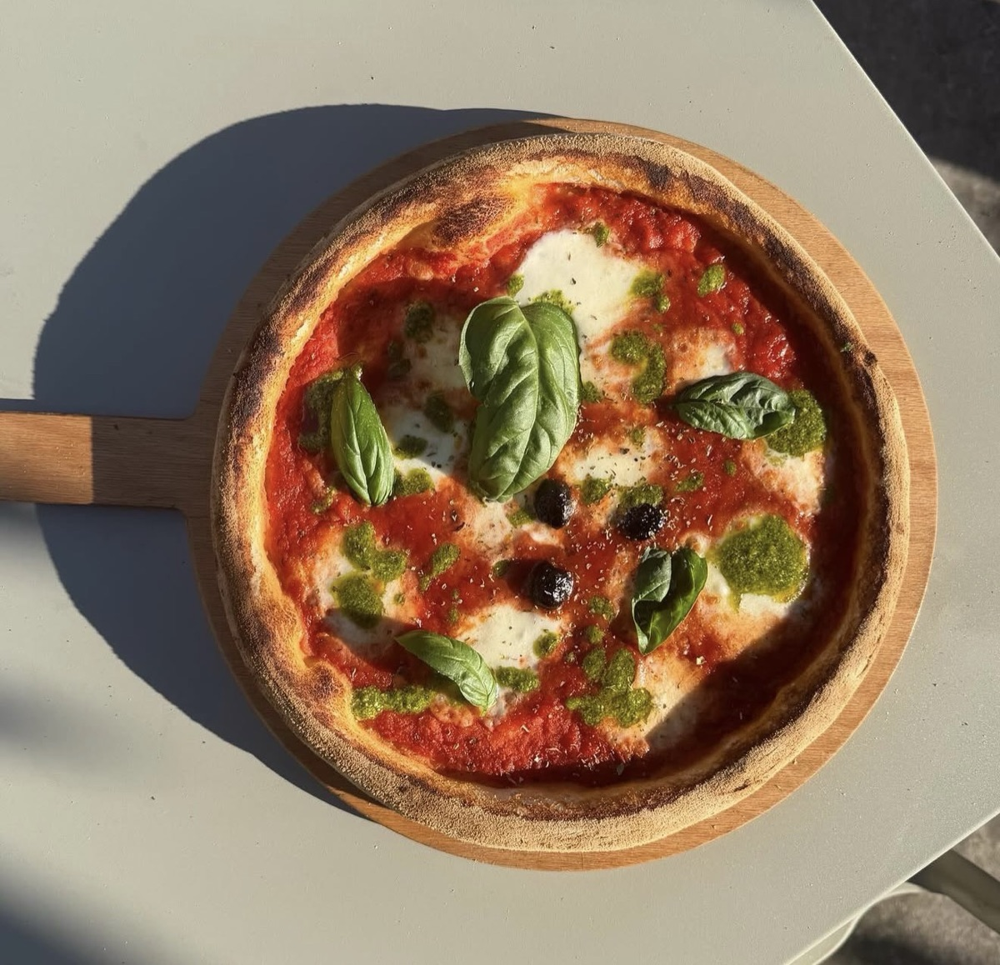
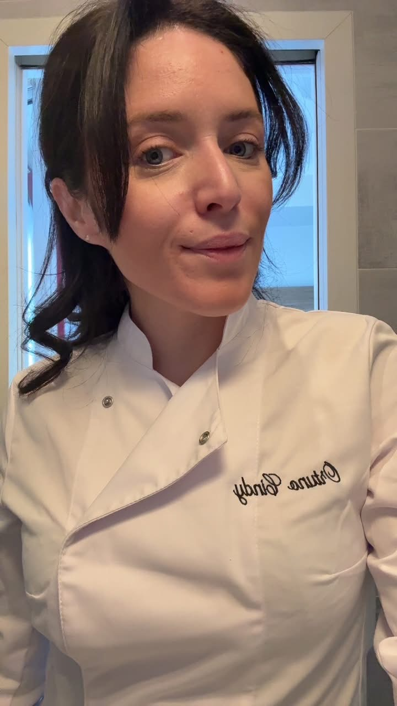
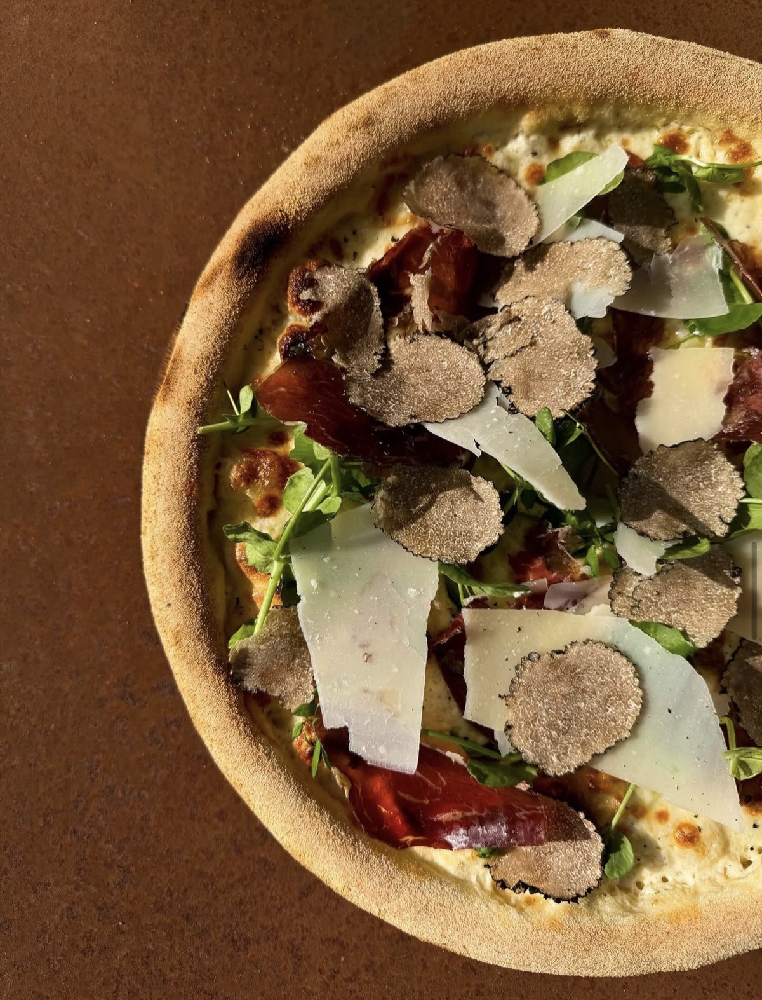
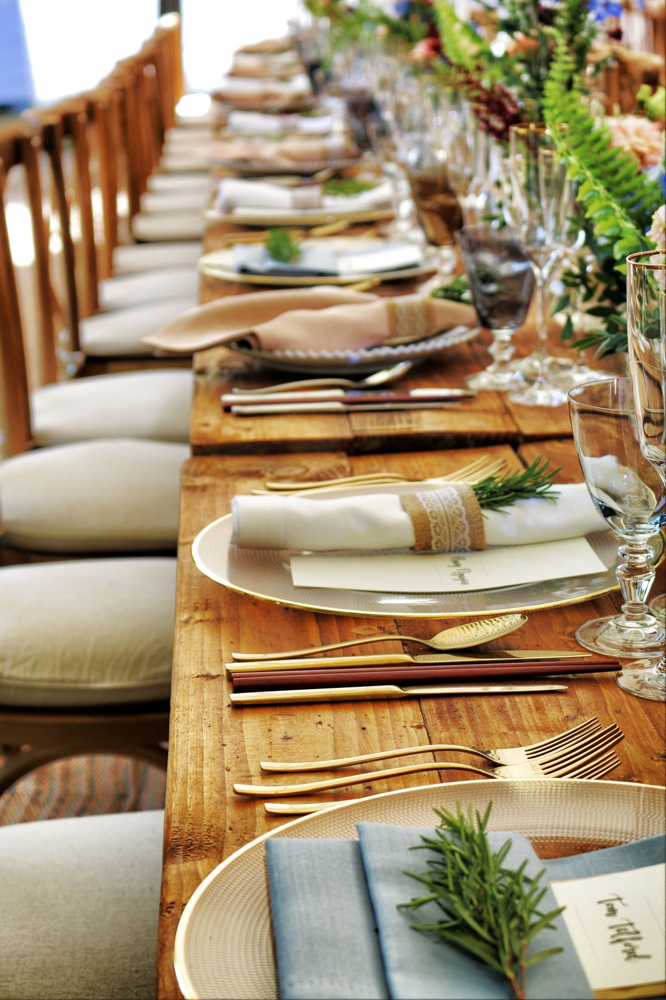

Enzo Pizza — Pizzeria à L'Isle-sur-la-Sorgue
Vivre d'amour
et de pizzas
Une pâte qui a reposé deux jours. Des produits qu'on ne choisit pas par hasard. Et les mains de Cindy — vice-championne de France — qui transforment tout ça en quelque chose qui vous arrête à la première bouchée.


Le parcours de Cindy
Elle était serveuse. Un jour, elle a décidé que ce serait elle derrière le four. Formée par Ludovic Bicchiera puis John Berg, Cindy n'a pas mis longtemps à prouver que ce n'était pas un caprice :
- 01 Vice-championne de France féminine
- 02 Vice-championne de France toutes catégories — qualifiée à Paris
- 03 4e au championnat du monde — pizza dessert & calzone, Menton
Mais Cindy ne s'est pas arrêtée aux pizzas. Gnocchis, raviolis, pâtes fraîches — chaque matin, elle repart de zéro avec la même obsession : que le produit soit juste. Pas parfait sur Instagram. Juste bon.
Un lieu, deux âmes

Enzo Pizza
La pizzeria du quotidien. Pâte pétrie chaque matin, garnitures choisies avec soin, cuisson au feu de bois. En terrasse, à emporter, ou via Uber Eats.
Voir la carte
Maison NOTI
Le traiteur qui vient chez vous. Un four à bois mobile, des pizzas façonnées devant vos invités, des buffets pensés pour chaque occasion.
Demander un devisCe qui ne se voit pas, se goûte
Le secret d'une bonne pizza, c'est tout ce qui se passe avant qu'elle arrive dans votre assiette.
48h de fermentation lente
Un préferment maîtrisé, un repos minimum de deux jours. La pâte développe ses arômes, sa légèreté et sa digestibilité — naturellement.
Des produits, pas des compromis
Mozzarella fior di latte, tomates San Marzano, huile d'olive première pression. Chaque ingrédient est choisi pour ce qu'il apporte au goût.
Fait main, chaque jour
Des pizzas aux gnocchis en passant par les raviolis — rien ne sort d'un carton. Tout est préparé sur place, à la main, chaque matin.
« Vivre d'amour et de pizzas »
— Cindy, votre pizzaïola préférée
Tout savoir sur Enzo Pizza
Où se trouve Enzo Pizza à L'Isle-sur-la-Sorgue ?
Enzo Pizza est situé au 271 Cours Fernande Peyre, 84800 L'Isle-sur-la-Sorgue, au cœur du centre-ville. La pizzeria se trouve sur le cours principal, facilement accessible à pied ou en voiture.
Quels sont les horaires d'ouverture ?
Enzo Pizza est ouvert 7 jours sur 7. Du mardi au dimanche de 17h à 22h, le lundi et le jeudi de 17h à 21h30. Nous vous recommandons de réserver, surtout le week-end.
Enzo Pizza livre-t-il à domicile ?
Oui, Enzo Pizza propose la livraison à domicile via Uber Eats. Vous pouvez aussi venir retirer votre commande directement à la pizzeria.
Peut-on réserver une table ?
Oui, la réservation est fortement conseillée, en particulier le vendredi, samedi et dimanche. Appelez-nous au 04 90 20 21 20.
Maison NOTI se déplace-t-elle pour les événements ?
Oui, Maison NOTI est le service traiteur d'Enzo Pizza. Nous nous déplaçons dans tout le Luberon et le Vaucluse avec notre four à bois mobile pour vos mariages, anniversaires et événements d'entreprise. En savoir plus.
L'essentiel en un coup d'œil
271 Cours Fernande Peyre
84800 L'Isle-sur-la-Sorgue
Ouvert 7j/7 · 17h–22h
Lundi & jeudi jusqu'à 21h30
04 90 20 21 20
Fortement conseillée